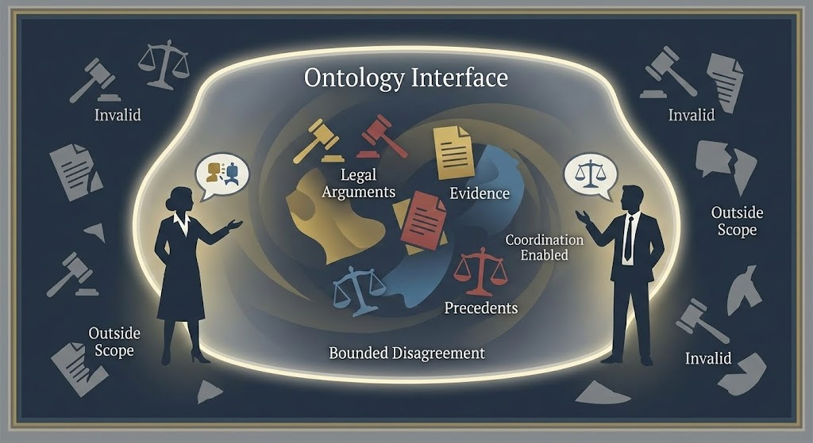
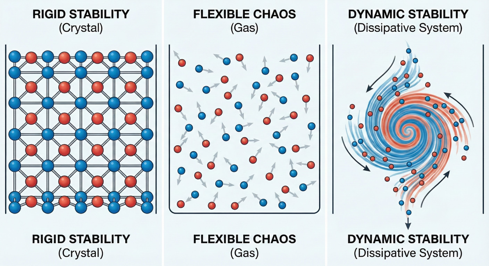

Norms as Interfaces
Social norms are interfaces that constrain how individuals can interact. They are not just rules or conventions; they are boundaries that make coordinated behavior possible. Norms create expectations, enable prediction, and allow people to coordinate their actions without explicit communication.
As shown above, this shows how social norms work as negotiated constraints. Like semantic interfaces, social interfaces create boundaries within which disagreement and variation can occur. The boundary itself defines what counts as valid behavior, argument, or evidence. People can disagree about specific issues while respecting the same boundary rules. This bounded disagreement enables coordination, the interface constrains disagreement without eliminating it, creating the conditions for productive social interaction.
"Social interfaces coordinate behavior across individuals while preserving social coherence."
Institutions as Stabilizing Structures
Institutions are formalized social interfaces. They include legal systems, economic structures, educational systems, and political organizations. Like biological membranes, institutions create boundaries that maintain coherence while allowing exchange.
As shown above, this shows how institutions can maintain stability without rigidity. Like good interfaces, institutions create boundaries that enable coordination while remaining flexible enough to adapt. They don't freeze social structures in place, but create the constraints that make large-scale cooperation possible. Institutions stabilize social interfaces, making them more robust and persistent, while still allowing evolution and change within the boundaries they establish.
Institutions stabilize social interfaces, making them more robust and persistent. They create the conditions for large-scale cooperation and collective action that would be impossible without them.
Legal Frameworks
Legal systems create shared worlds through semantic interfaces, the constraints of legal language, the norms of procedure, the standards of evidence, the traditions of interpretation. These interfaces create the conditions under which legal decisions can be made, justified, and enforced.

As shown above, this shows how legal frameworks, as semantic interfaces, shape behavior by deciding which distinctions matter. Classification systems demonstrate how different ontologies create different categories that influence behavior. Legal interfaces don't just describe the world, they shape it by creating the boundaries that determine what counts as valid argument, evidence, or precedent. These interfaces coordinate interpretation while also exercising power by determining which distinctions matter.
A lawyer in the United States and a lawyer in the United Kingdom can understand each other's legal reasoning because they share similar semantic interfaces, even though their specific laws differ. The interfaces coordinate interpretation across jurisdictions, enabling international legal cooperation.

As shown above, this shows how social interfaces can maintain stability even as they evolve. Legal systems, like all good interfaces, must be stable enough to enable coordination while flexible enough to adapt to changing circumstances. The interface maintains coherence by constraining how change can occur, ensuring that evolution remains compatible with existing structures. This stability under change is what enables institutions to persist and function effectively over time.
Key Concepts
- Social Norms: Interfaces that constrain individual interaction
- Institutions: Formalized social interfaces
- Legal Frameworks: Semantic interfaces for justice and order
- Cooperation: Coordinated behavior enabled by social interfaces
- Collective Action: Large-scale coordination through interfaces
- Social Coherence: Stability maintained by social boundaries
Building on Semantic Interfaces
Social interfaces build upon semantic interfaces. They rely on the shared meaning and communication established at the semantic level, but add the ability to coordinate behavior across many individuals, enabling cooperation, institutions, and collective action at scales that would be impossible without these interfaces.